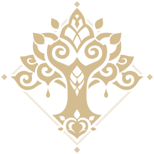

ABOUT GENSHIN IMPACT
Game Overview
Genshin Impact is an open-world action RPG game where players can explore the fantasy world of Teyvat. Players can travel through various regions, each with unique landscapes, characters, and quests. The game uses a gacha system where players can unlock new characters and weapons in limited-time events.
This game is one of many produced by a Chinese company called Hoyoverse, previously known as MiHoyo. The company began working on this game in 2017 and released it on 28 September 2020.
Drawing from various references, Genshin Impact is able to represent several real-life cultures in each region:
|
Mondstadt: Germany |
 Liyue: China, Taiwan, Hong Kong |
 Inazuma: Japan |
 Sumeru: India, Middle East |
 Fontaine: France, Britain (Victorian Era) |
Liyue: China, Taiwan, Hong Kong |
|
Natlan: African Countries, South American Country |
Snezhnaya: Russia |
Elemental System
Genshin Impact offers a combined system consisting of elemental-power-based and physical combat gameplay. There are seven types of elemental power:
 Anemo (Wind)
Anemo (Wind)
|
Geo (Earth) |
 Electro (Lightning)
Electro (Lightning)
|
Dendro (Nature) |
| Hydro (Water) |
 Pyro (Fire)
Pyro (Fire)
|
| Cryo (Ice) |
By combining these elements correctly in combat, players can create powerful reactions such as freezing enemies or causing explosions, adding new strategic depth to battles.
Characters and Combat
Form a group with up to four characters, each with unique abilities and elemental powers. Switch between characters during combat to create effective elemental combinations. Each character has a normal attack, an elemental skill, and an elemental burst for diverse combat strategies. To achieve a better experience, build up your characters by collecting materials in various types of domains, gathering local specialties, and forming better team combinations.
All characters may have different physical combat abilities but can be categorized into five types:
| Sword | Claymore (Greatsword) |
| Bow | Polearm (Spear) |
| Catalyst (Magic) |
Elemental reactions can also enhance the player's experience by boosting a character's damage output and/or adding additional reaction damage. To further increase damage, players can equip all characters with sets of artifacts to boost their statistics.
Adventure Rank and Progression
Your progress is tracked by your Adventure Rank (AR). Players can increase their AR by completing quests, exploring, and defeating enemies. Higher AR levels unlock new content, challenges, and better rewards, encouraging continuous exploration and engagement. In many situations, certain domains are locked to ensure that players are at suitable levels to clear them.
In some cases, the main character's (the Traveler) ascension materials are only collectible at certain AR levels since the material is a one-time use and not a collectible.
Increasing your AR also increases the World Level at certain AR milestones. At these AR milestones, players need to clear a special domain to level up their World Level. By increasing the World Level, enemy drop rates and levels increase, providing a more challenging and rewarding experience.
Progression also includes Main Quests and Side Quests. By completing these, players can receive rewards such as in-game money (Mora), special currency (Primordial Gems/Primogems), or character level-up materials. The Main Quest, also known as the Archon Quest, revolves around each nation's deities called Archons, who possess the authority over their respective elements.
The Side Quests are divided into four categories:
- Character Story: Stories centered around selected playable characters, allowing players to learn more about their backstories and personal visions.
- Hangout Event: Stories centered around selected playable characters, where players can hang out with them and discover different endings based on their interactions.
- Tribal Chronicles: Special story modes focusing on tribal areas in Natlan, where players learn each tribe's history and help with their current problems.
- World Quest: Stories centered around certain Non-Player Characters (NPCs) to learn more about the region's history and local culture.
Multiplayer and Co-op
Genshin Impact supports a multiplayer mode called Co-op, allowing players to team up with friends. Co-op mode can be unlocked at Adventure Rank 16, enabling players to explore the world and tackle challenges together, enhancing the social aspect of the game. However, there are certain limitations in joining others, such as incompatible World Levels. If the host's World Level is too high, players with lower World Levels can't join to prevent any issues on both the developer's and player's sides.
When playing in Co-op mode, players can interact with each other to clear domains, collect bosses' materials, and gather many other resources together. By playing in Co-op mode, players can unlock new combat strategies during fights with certain bosses.
During some limited events, players can play minigames together and claim generous rewards by encouraging their friends to participate. Since these events are one-time-only, players get to enjoy them as special memories, increasing their enthusiasm to keep playing the game.